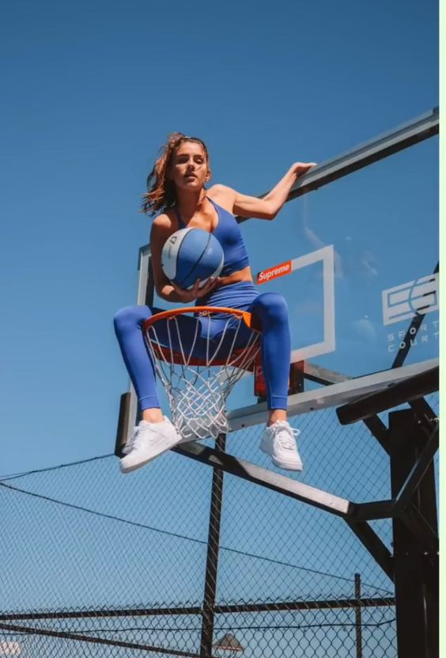
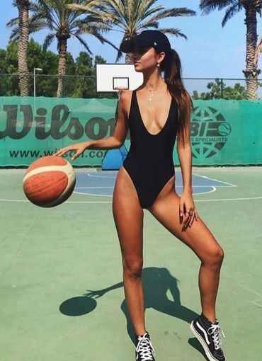

- WHAT IS THE BASKETBALL
- GAURD
- FORWARD
- CENTER
 
Guard의 역할
가드라는 이름의 유래는 농구가 아직 룰이 정립되지 않았을때 코트를 반으로 나누어서 자기 편의 코트에서만 머무르며
골대를 지키는 포지션이었기 때문이다. 당시에 학교체육으로 고안된 농구에서 공격에 유리한 키 큰 학생들은 포워드가
되어서 공격하러 상대편 코트에 갔고 키 작은 학생들이 자기 코트를 지켰기 때문에 이후로도 역할은 변했으나 상대적으로
키 작은 선수들이 가드라는 명칭을 이어받게 되었다. 중앙에서 봤을때 자기 진영인 뒤쪽에 머무르는 선수들이었기 때문에
현재까지도 백코트진이라는 용어로 부른다. 전통적으로 포인트 가드와 슈팅 가드로 나뉜다. 현대 농구가 발전하면서
이 두가지 능력을 다 갖춘 멀티플레이어들이 등장하고 있는데 이들을 일컬어 듀얼 가드, 콤보 가드라는 말로 표현하기도 한다.
포인트가드
볼을 하프 코트로 운반하고, 패턴을 지시하거나 적재적소에 패스를 뿌려 게임을 리딩하는 플레이 메이커 포지션이다.
상황 판단 능력과 드리블, 넓은 시야, 패싱 센스 등이 요구된다. 볼 간수와 운반이 중요하기 때문에 주로 메인 볼 핸들러에게 주어지는 포지션이다.
가드한테 잘해야 공이 잘 온다는 말이 괜히 나오는 게 아니다
NBA선수 중에는 스테판 커리, 러셀 웨스트브룩, 카이리 어빙,크리스 폴, 데미안 릴라드 등이 있다.
국내(KBL)에는 허훈, 김선형, 김낙현, 두경민 등이 현재 리그에서 활약하고 있다.
국내(KBL)에서 은퇴한 선수 중에는 이상민, 허재, 양동근 등이 대표적이다.
슈팅가드
이름 그대로 슛을 잘하는 가드. 꼭 슛을 잘해야 한다고 슈팅가드인 것은 아니지만 팀에서 3점 슛을 담당할 수 있는 선수가 있어야 하므로
슈팅 가드들은 대체로 3점을 잘 쏜다. 하지만 포인트 가드와 경기를 같이 도우며 운영할 수 있어야 하며 외곽에 집중되는 수비를 피해
우리 팀에게 패스를 줄 수 있어야 한다. 또 안쪽에 있는 센터에게 볼을 배급해줄 수 있어야 한다.
유명한 선수로는 KBL의 허웅, 정인교, 강혁, 조성민 등이 있고, NBA에서는 제임스 하든, 클레이 탐슨, 지미 버틀러, 마이클 조던 등이 있다.